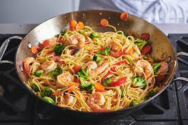

Shrimp Lo-Mein

Description
Packed with flavor, this shrimp lo mein recipe has tender juicy shrimp, veggies, and egg noodles in a simple sauce.
Ingredients
1 (8 ounce) package spaghetti
1½ tablespoons white sugar
2 tablespoons hoisin sauce
2 tablespoons vegetable oil
1½ cups uncooked medium shrimp, peeled and deveined
3 large cloves garlic, minced
¼ cup green onions, chopped
Directions
1. Bring a large pot of lightly salted water to a boil. Cook spaghetti in the boiling water until cooked through yet firm to the bite, about 12 minutes; drain.
2. Whisk chicken broth, sugar, hoisin sauce, soy sauce, and cornstarch in a bowl.
3. Heat oil in a large skillet or wok over medium-high heat. Cook and stir shrimp and garlic in hot oil until shrimp are bright pink on the outside and the meat is no longer transparent in the center, about 5 minutes. Reduce heat to medium-low. Add prepared sauce and chopped green onions to the shrimp mixture; cook until the sauce thickens, 2 to 3 minutes. Toss cooked spaghetti with the mixture to coat the noodles in sauce. Serve immediately.